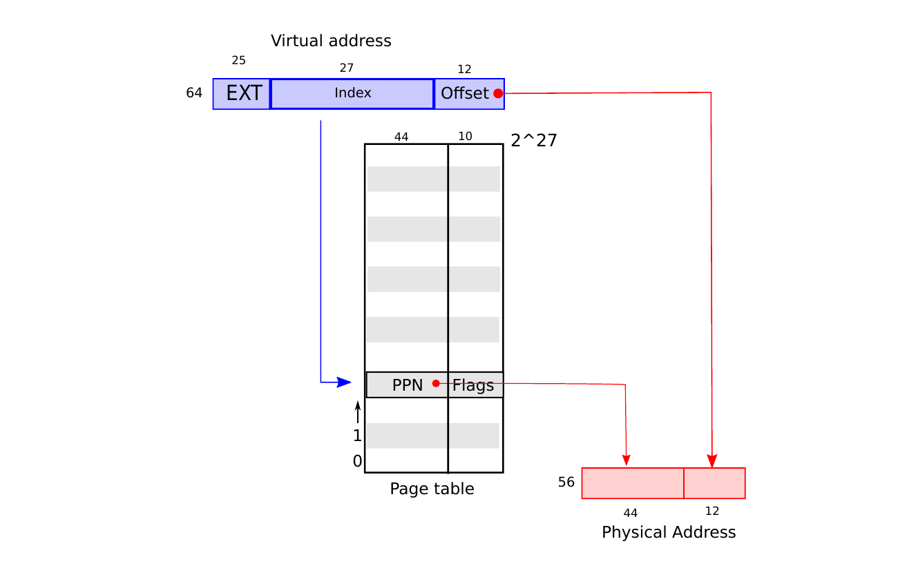
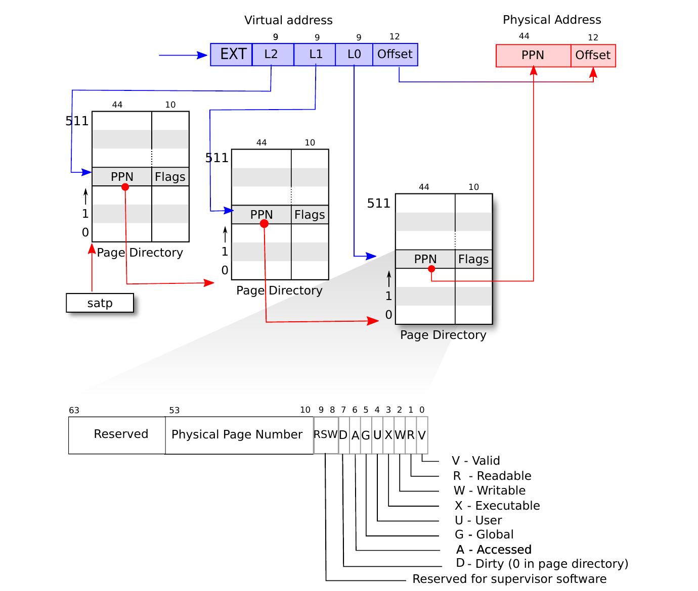
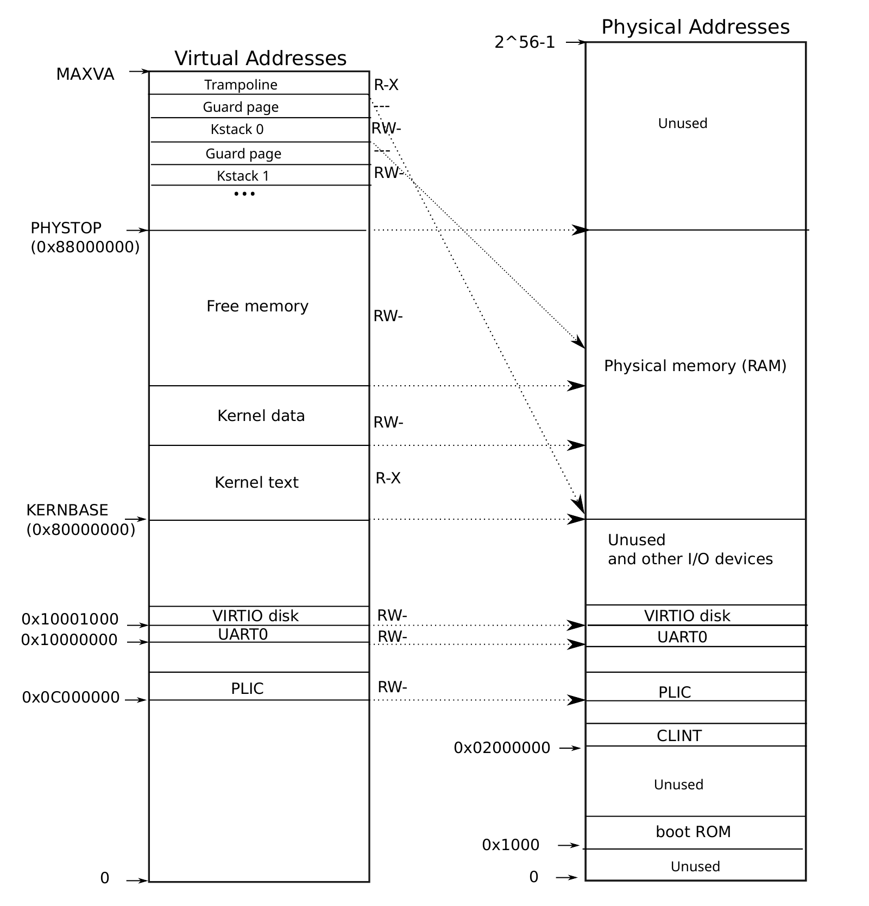
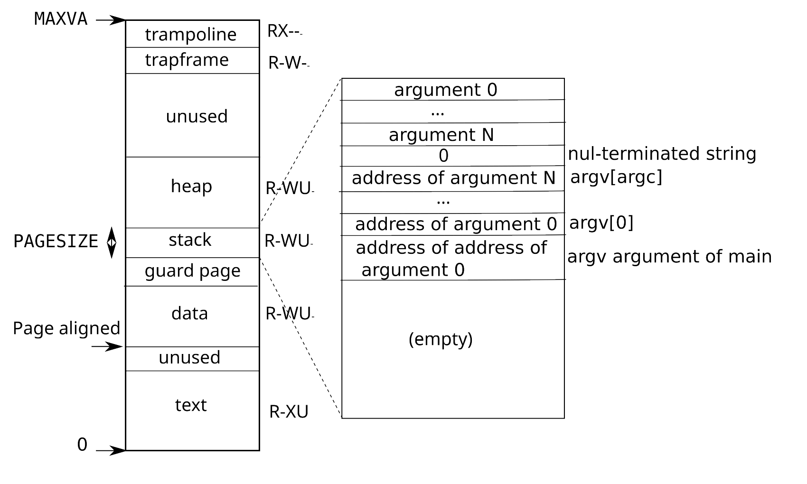

第 3 章 页表
页表是操作系统为每个进程提供私有地址空间和内存的最常见机制。页表决定内存地址的含义，以及物理内存的哪些部分可以被访问。它们允许 xv6 隔离不同进程的地址空间，并把这些地址空间复用到同一份物理内存上。页表提供了一层间接性，使操作系统能够实现许多有用技巧。xv6 使用了其中一些：在多个地址空间中映射同一份内存（trampoline 页）、用未映射页保护内核栈和用户栈，以及惰性分配用户堆内存。本章余下部分解释 RISC-V 硬件提供的页表，以及 xv6 如何使用它们。
3.1 分页硬件
回顾一下，RISC-V 指令（无论用户指令还是内核指令）操作的都是虚拟地址。机器的 RAM，也就是物理内存，则用物理地址索引。RISC-V 的页表硬件通过把每个虚拟地址映射到一个物理地址，把这两种地址连接起来。
xv6 使用 RISC-V 的 Sv39 模式，这意味着 64 位虚拟地址只有低 39 位被使用；高 25 位不用。在这种 Sv39 配置中，RISC-V 页表在逻辑上是一个包含 227（134,217,728）个页表项（PTE）的数组。每个 PTE 包含一个 44 位物理页号（PPN）和若干标志位。分页硬件翻译虚拟地址时，用这 39 位中的高 27 位在页表中索引出一个 PTE，然后构造一个 56 位物理地址：高 44 位来自 PTE 中的 PPN，低 12 位从原始虚拟地址复制而来。图 3.1用“PTE 的简单数组”这种逻辑视图展示了这一过程（RISC-V 页表实际是一棵树；更完整的图示见图 3.2）。页表使操作系统能以 4096（212）字节对齐块为粒度控制虚拟地址到物理地址的转换。这样的块称为页。

RISC-V 的设计为虚拟地址和物理地址继续扩展留下了空间。如果需要更大的虚拟地址空间，RISC-V 支持使用 48 位虚拟地址的 Sv48 模式 [3]。物理地址也有增长余地：PTE 格式中还有空间让物理页号再增长 10 位。RISC-V 设计者基于技术预测选择了这些地址大小。248 字节是 262,144 GB，比今天任何应用可能使用的用户虚拟地址空间都大得多。256 字节物理地址空间是 65,536 TB，也远超当前任何计算机能够配备的 RAM。
如图 3.2所示，RISC-V CPU 页表在物理内存中保存为三层树。树根是一个 4096 字节的页表页，包含 512 个 PTE，每个 PTE 保存下一层页表页的物理地址。第二层的每个页也包含 512 个 PTE，用于树的最后一层。分页硬件用 27 位索引中的高 9 位选择根页表页中的 PTE，用中间 9 位选择下一层页表页中的 PTE，用低 9 位选择最终 PTE。（在 RISC-V Sv48 中，页表有四层，虚拟地址的第 39 到 47 位索引最高层。）
如果翻译一个地址所需的三个 PTE 中任意一个不存在，分页硬件会产生页错误异常，由内核负责处理该页错误（见第 4 章和第 5 章）。
与图 3.1中的单层设计相比，图 3.2的三层结构能以更节省内存的方式记录 PTE。在常见情况下，大范围虚拟地址并没有映射，三层结构可以省略整个页目录。例如，如果一个应用只使用从地址零开始的少数页，那么最高层页目录的 1 到 511 项都是无效的，内核不必为这 511 个中间页目录分配页，也不必为这些中间页目录对应的底层页目录分配页。因此在这个例子中，三层设计节省了 511 个中间页目录页和 511 × 512 个底层页目录页。
尽管 CPU 在执行 load 或 store 指令时会用硬件遍历三层结构，但三层结构的潜在缺点是，CPU 必须从内存加载三个 PTE，才能把 load/store 指令中的虚拟地址翻译成物理地址。为避免从物理内存加载 PTE 的成本，RISC-V CPU 会把页表项缓存在转换后备缓冲区（Translation Look-aside Buffer，TLB）中。

每个 PTE 包含标志位，告诉分页硬件对应虚拟地址允许如何使用。PTE_V 表示 PTE 是否存在：如果没有置位，对该页的引用会导致页错误（即不允许访问）。PTE_R 控制指令是否允许读取该页。PTE_W 控制指令是否允许写该页。PTE_X 控制 CPU 是否可以把该页内容解释为指令并执行。PTE_U 控制用户模式下的指令是否允许访问该页；如果 PTE_U 没有置位，该 PTE 只能在监督者模式中使用。图 3.2展示了这些标志位在 PTE 中的位置。标志和其他所有与页硬件相关的结构都定义在 (0500)。
为了告诉 CPU 使用某个页表，内核必须把根页表页的物理地址写入 satp 寄存器。CPU 会使用 satp 指向的页表来翻译之后指令产生的所有地址。每个 CPU 都有自己的 satp，因此不同 CPU 可以运行不同进程，每个进程由自己的页表描述私有地址空间。
从内核角度看，页表是存储在内存中的数据；内核用类似操作任意树状数据结构的代码来创建和修改页表。
本书用到的一些术语如下。物理内存指 RAM 中的存储单元。物理内存中的一个字节有一个地址，称为物理地址。解引用地址的指令（例如 load、store、jump 和函数调用）只使用虚拟地址，分页硬件把虚拟地址翻译为物理地址，再发送给 RAM 硬件以读写存储。地址空间是某个给定页表中有效虚拟地址的集合；每个 xv6 进程有独立的用户地址空间，xv6 内核也有自己的地址空间。用户内存指一个进程的用户地址空间，以及页表允许该进程访问的物理内存。虚拟内存指与管理页表、并利用页表实现隔离等目标有关的思想和技术。
3.2 内核地址空间
xv6 启动时会创建一个描述内核地址空间的单一页表。内核配置自己的地址空间布局，使自身能够在可预测的虚拟地址访问物理内存和各种硬件资源。图 3.3展示了这个布局如何把内核虚拟地址映射到物理地址。文件 (0200) 声明了 xv6 内核内存布局的常量。

QEMU 模拟的计算机包含从物理地址 0x80000000 开始，并至少持续到 0x88000000 的 RAM（物理内存），xv6 把后者称为 PHYSTOP。QEMU 模拟还包含磁盘接口等 I/O 设备。QEMU 把设备接口作为低于 0x80000000 的物理地址空间中的内存映射控制寄存器暴露给软件。内核通过读写这些特殊物理地址与设备交互；这些读写与设备硬件通信，而不是与 RAM 通信。第 4 章解释 xv6 如何与设备交互。
内核把所有物理 RAM 和设备寄存器映射到与物理地址相等的虚拟地址。这称为“直接映射”，允许内核只需对虚拟地址 x 执行 load 或 store，就能读写物理地址 x。内核代码本身位于虚拟地址空间和物理内存中的 KERNBASE=0x80000000。当 kfork (2373) 为子进程分配用户内存时，分配器返回该内存的物理地址；kfork 在复制父进程用户内存到子进程时，直接把这个地址当作虚拟地址使用。
有几个内核虚拟地址不是直接映射的：
- trampoline 页。它映射在虚拟地址空间顶部；用户页表也有同样的映射。第 4 章会讨论 trampoline 页的作用，但这里已经能看到页表的一个有趣用例：保存 trampoline 代码的物理页在内核虚拟地址空间中被映射了两次，一次在虚拟地址空间顶部，一次通过直接映射。
- 内核栈页。每个进程都有自己的内核栈，它被映射到较高的内核虚拟地址，使 xv6 能在它下面留下一个未映射的保护页。保护页的 PTE 是无效的（即没有设置
PTE_V），因此如果内核栈溢出，很可能会触发页错误并使内核panic。没有保护页时，溢出的栈会覆盖其他内核内存，导致错误运行。一次panic崩溃更可取。
虽然内核通过高地址映射使用这些栈，但每个栈也可以通过直接映射地址访问。另一种设计可以只保留直接映射，并在直接映射地址使用栈。但那样一来，要提供保护页就必须取消映射本来会引用物理内存的虚拟地址，使这些物理内存难以使用。
内核用 PTE_R 和 PTE_X 权限映射 trampoline 页和内核文本，但不设置 PTE_W。内核用 PTE_R 和 PTE_W 映射其他页，但不设置 PTE_X。保护页的映射无效。这些受限权限的目的，是帮助捕获以意外方式访问页的内核 bug，例如内核代码意外尝试覆盖内核指令。
内核创建一个单一内核页表，所有 CPU 在内核中执行时都使用它。xv6 初始创建内核页表后，不再修改它。
3.3 代码：创建地址空间
继续之前，请先阅读 kernel/vm.c 到 mappages() 结束为止。
xv6 中大多数操作地址空间和页表的代码位于 vm.c (1400)。核心数据结构是 pagetable_t，它实际是指向 RISC-V 根页表页的指针；一个 pagetable_t 可以是内核页表，也可以是某个进程的页表。核心函数是 walk 和 mappages：前者查找某个虚拟地址对应的 PTE，后者为新映射安装 PTE。以 kvm 开头的函数操作内核页表；以 uvm 开头的函数操作用户页表；其他函数两者都会使用。copyout 和 copyin 在系统调用参数给出的用户虚拟地址与内核之间复制数据；它们位于 vm.c，因为必须显式翻译这些地址才能找到对应物理内存。
在启动早期，main 调用 kvminit (1465)，通过 kvmmake (1421) 创建内核页表。此时 xv6 还没有在 RISC-V 上启用分页，所以地址直接指向物理内存。kvmmake 首先分配一页物理内存来保存根页表页，然后调用 kvmmap 安装内核需要的转换。这些转换包括内核指令和数据、到 PHYSTOP 为止的物理内存，以及实际是设备的内存范围。proc_mapstacks (2132) 为每个进程分配一个内核栈，并调用 kvmmap 将每个栈映射到由 KSTACK 生成的虚拟地址，给无效的栈保护页留下空间。
kvmmap (1457) 调用 mappages (1556)，为一段虚拟地址范围到对应物理地址范围安装映射。它以页为间隔，对范围中的每个虚拟地址分别执行。对每个要映射的虚拟地址，mappages 调用 walk 找到该地址的 PTE，然后把 PTE 初始化为相关物理页号、需要的权限（PTE_W、PTE_X 和/或 PTE_R），以及表示有效的 PTE_V (1577)。
walk (1497) 模仿 RISC-V 分页硬件查找虚拟地址 PTE 的过程（见图 3.2）。walk 每次下降页表树的一层，用虚拟地址中该层对应的 9 位索引相关页目录页。在每层，它要么找到下一层页目录页的 PTE，要么找到最终页的 PTE (1503)。如果第一层或第二层页目录页中的 PTE 无效，说明所需目录页尚未分配；如果设置了 alloc 参数，walk 会分配新的页表页，并把它的物理地址放入 PTE。它返回树最低层中 PTE 的地址 (1513)。
上述代码依赖物理内存被直接映射进内核虚拟地址空间。例如，walk 下降页表层级时，会从 PTE 中取出下一层页表的物理地址 (1505)，然后把该地址作为虚拟地址来读取下一层中的 PTE (1503)。
在每个 CPU 上，main 调用 kvminithart (1473) 安装内核页表，把根页表页的物理地址放入 CPU 的 satp 寄存器。之后 CPU 会用内核页表翻译地址。内核仍能正确执行，因为内核页表是直接映射的，所以这次切换前后，地址都引用 RAM 中相同位置。
每个 RISC-V CPU 会在 TLB 中缓存页表项。当 xv6 改变页表时，必须告诉 CPU 使相应的 TLB 缓存项失效。否则，稍后 TLB 可能使用旧的缓存映射，指向一页已经被分配给其他进程的物理页，结果某个进程可能涂写其他进程的内存。RISC-V 有一条 sfence.vma 指令，用来刷新当前 CPU 的 TLB。xv6 在重新加载 satp 之后的 kvminithart 中，以及 trampoline 代码的 uservec 和 userret 中执行 sfence.vma。
在改变 satp 之前也需要执行 sfence.vma，以等待所有未完成的 load 和 store 完成。这个等待确保之前对页表的更新已经完成，也确保之前的 load 和 store 使用旧页表而不是新页表。
3.4 物理内存分配
内核必须在运行时为页表、用户内存、内核栈和管道缓冲区分配并释放物理内存。
xv6 把内核结尾到 PHYSTOP 之间的物理内存用于运行时分配。它一次分配和释放完整的 4096 字节页。它通过在空闲页本身中串起一个链表来记录哪些页空闲。分配就是从链表中移除一个页；释放就是把释放的页加入链表。
请阅读 kernel/kalloc.c。
3.5 代码：物理内存分配器
分配器位于 kalloc.c (2950)。分配器的数据结构是一个可供分配的物理内存页空闲链表。每个空闲页的 “next” 指针位于一个 struct run (2966) 中。分配器把每个空闲页的 run 结构存放在该空闲页自身中，因为页空闲时里面没有其他东西。空闲链表由一个自旋锁保护 (2970-2973)。链表和锁被包在一个结构中，以明确这个锁保护该结构中的字段。暂时忽略锁以及对 acquire 和 release 的调用；第 7 章会详细讨论锁。
main 函数调用 kinit 初始化分配器 (2976)。kinit 把空闲链表初始化为包含内核结尾到 PHYSTOP 之间的每一页物理 RAM。xv6 本应通过解析硬件提供的配置信息来确定可用物理内存量；但 xv6 假定机器有 128 MB RAM。kinit 调用 freerange，通过对每页调用 kfree 把内存加入空闲链表。PTE 只能引用按 4096 字节边界对齐（4096 的倍数）的物理地址，所以 freerange 使用 PGROUNDUP 确保只释放对齐的物理地址。分配器最初没有内存；这些对 kfree 的调用给了它一些可以管理的内存。
分配器有时把地址当作整数，以便对它们做算术（例如在 freerange 中遍历所有页）；有时又把地址当作指针来读写内存（例如操作存储在每个页中的 run 结构）。地址的这种双重用途，是分配器代码中充满 C 类型转换的主要原因。
kfree (3005) 首先把要释放的内存中的每个字节设为 1。这会让释放后仍使用该内存（使用“悬垂引用”）的代码读到垃圾值而不是旧的有效内容；希望这能使这类代码更快出错。然后 kfree 把页插入空闲链表头部：它把 pa 转换为指向 struct run 的指针，把旧的空闲链表开头记录到 r->next，并把空闲链表设为 r。kalloc 移除并返回空闲链表中的第一个元素。
3.6 进程地址空间
每个进程都有自己的页表；xv6 在进程之间切换时，也会切换页表。图 3.4比图 2.3更详细地展示了进程地址空间。进程的用户地址空间从零开始，原则上结束于 MAXVA（0x4000000000）(0896)，但实践中只有其中很小一部分映射到物理内存。
一个进程的地址空间包含保存程序文本的页（xv6 用 PTE_R、PTE_X 和 PTE_U 权限映射它们）、保存程序预初始化数据的页、一个栈页，以及堆页。xv6 用 PTE_R、PTE_W 和 PTE_U 权限映射数据、栈和堆。
在用户地址空间内部使用权限，是加固用户进程的常见技术。如果文本页也用 PTE_W 映射，进程就可能意外修改自己的程序；例如编程错误可能导致程序写入空指针，修改地址 0 处的指令，然后继续运行，造成更多混乱。为了立即发现这类错误，xv6 映射文本页时不设置 PTE_W；如果程序意外尝试写地址 0，硬件会拒绝执行该 store 并产生页错误（见第 4 章）。随后内核会杀死该进程并打印信息，帮助开发者定位问题。
类似地，通过不为数据页设置 PTE_X，用户程序就不能意外跳到程序数据中的某个地址并从那里开始执行。
在真实世界中，仔细设置权限来加固进程也有助于抵御安全攻击。攻击者可能向程序（例如 Web 服务器）提供精心构造的输入，触发程序中的 bug，并希望把这个 bug 变成漏洞利用 [14]。仔细设置权限，以及用户地址空间布局随机化等其他技术，会让这类攻击更困难。
栈是一个单页，图 3.4展示了由 exec 系统调用创建时的初始内容。包含命令行参数的字符串，以及指向它们的指针数组，都位于栈的最顶部。其下方是一些值，使程序启动时看起来像刚调用过函数 main(argc, argv)。
为了检测用户栈溢出已分配的栈内存，xv6 在栈正下方放置一个不可访问的保护页，方式是清除 PTE_U 标志。如果用户栈溢出并且进程尝试使用栈下方地址，硬件会产生页错误异常，因为运行在用户模式的程序不能访问保护页。真实世界的操作系统可能会在用户栈溢出时自动为它分配更多内存。

这里可以看到页表的几个漂亮用法。第一，不同进程的页表把用户地址翻译到不同的物理内存页，因此每个进程都有私有用户内存。第二，每个进程看到的内存是从零开始的连续虚拟地址，而进程的物理内存可以是不连续的。第三，内核把一页 trampoline 代码映射到用户地址空间顶部（不设置 PTE_U），这样同一个物理页会出现在所有地址空间中，但只能由内核使用。
3.7 代码：exec
请阅读 kernel/exec.c，以及 kernel/vm.c 中从 uvmcreate() 开始的部分。
exec 是一个系统调用，它用从文件读取的数据替换进程的用户地址空间；这个文件称为二进制文件或可执行文件。二进制文件通常是编译器和链接器的输出，保存机器指令和程序数据。kexec (6426) 是内核内部的 exec 实现，它用 namei (6440) 打开指定的二进制路径；第 10 章会解释 namei。随后它读取 ELF 头。xv6 二进制文件采用广泛使用的 ELF 格式，该格式定义在 (0950)。一个 ELF 二进制由 ELF 头 struct elfhdr (0955) 后接一系列程序段头 struct proghdr (0974) 组成。每个 proghdr 描述应用中必须加载到内存的一段；xv6 程序有两个程序段头，一个用于指令，一个用于数据。
第一步是快速检查该文件大概是否包含 ELF 二进制。ELF 二进制以四字节“魔数”0x7F、'E'、'L'、'F'，即 ELF_MAGIC (0952) 开头。如果 ELF 头具有正确魔数，kexec 就假定该二进制格式良好。
kexec 用 proc_pagetable (6454) 分配一个没有用户映射的新页表，用 uvmalloc (6470) 为每个 ELF 段分配内存，并用 loadseg (6409) 把每个段加载到内存中。loadseg 使用 walkaddr 找到分配内存中要写入的物理地址，并用 readi 从文件读取。
/init 是用 exec 创建的第一个用户程序；它的程序段头如下：
# objdump -p user/_init
user/_init: file format elf64-little
Program Header:
0x70000003 off 0x0000000000006bb0 vaddr 0x0000000000000000
paddr 0x0000000000000000 align 2**0
filesz 0x000000000000004a memsz 0x0000000000000000 flags r--
LOAD off 0x0000000000001000 vaddr 0x0000000000000000
paddr 0x0000000000000000 align 2**12
filesz 0x0000000000001000 memsz 0x0000000000001000 flags r-x
LOAD off 0x0000000000002000 vaddr 0x0000000000001000
paddr 0x0000000000001000 align 2**12
filesz 0x0000000000000010 memsz 0x0000000000000030 flags rw-
STACK off 0x0000000000000000 vaddr 0x0000000000000000
paddr 0x0000000000000000 align 2**4
filesz 0x0000000000000000 memsz 0x0000000000000000 flags rw-可以看到，文本段应从文件偏移 0x1000 处加载到内存虚拟地址 0x0，且没有写权限。数据应加载到地址 0x1000，这是一个页边界，并且没有执行权限。
程序段头的 filesz 可能小于 memsz，表示二者之间的空隙应填零（用于 C 全局变量），而不是从文件读取。对 /init 而言，数据段的 filesz 是 0x10 字节，memsz 是 0x30 字节，因此 uvmalloc 分配足以保存 0x30 字节的物理内存，但只从文件 /init 读取 0x10 字节。
接下来 kexec 分配并初始化用户栈。它只分配一个栈页。kexec 逐个把参数字符串复制到栈顶，并在 ustack 中记录指向它们的指针。它在即将传给 main 的 argv 列表末尾放置一个空指针。argc 和 argv 的值通过系统调用返回路径传给 main：argc 作为系统调用返回值传递，进入 a0；argv 通过进程 trapframe 中的 a1 项传递。
kexec 在栈页正下方放置一个不可访问页，使尝试使用超过一页栈的程序触发错误。这个不可访问页也允许 kexec 处理过大的参数；在这种情况下，kexec 用来把参数复制到栈上的 copyout (1754) 函数会发现目标页不可访问，并返回 -1。
在准备新内存映像期间，如果 kexec 检测到无效程序段等错误，它会跳到 bad 标签，释放新映像并返回 -1。kexec 必须等到确定系统调用会成功后，才能释放旧映像：如果旧映像已经消失，系统调用就无法向它返回 -1。kexec 中的错误情况只发生在创建映像期间。一旦映像完成，kexec 就可以提交到新页表 (6531) 并释放旧页表 (6535)。
exec 系统调用把 ELF 文件中的字节加载到 ELF 文件指定的地址。用户或进程可以把任意地址放入 ELF 文件。因此 exec 有风险，因为 ELF 文件中的地址可能意外或故意指向内核。对不谨慎的内核来说，后果可能从崩溃到恶意破坏内核隔离机制（即安全漏洞）不等。xv6 执行多项检查来避免这些风险。例如 if(ph.vaddr + ph.memsz < ph.vaddr) 检查求和是否溢出 64 位整数。危险在于用户可能构造一个 ELF 二进制，使 ph.vaddr 指向用户选择的地址，并让 ph.memsz 大到足以让求和溢出为 0x1000，看起来像一个有效值。在旧版本 xv6 中，用户地址空间也包含内核（但用户模式不可读/写），用户可以选择一个对应内核内存的地址，从而把 ELF 二进制中的数据复制进内核。在 RISC-V 版本 xv6 中，这不会发生，因为内核有自己的独立页表；loadseg 加载到进程页表，而不是内核页表。
内核开发者很容易遗漏关键检查；真实世界的内核长期存在遗漏检查的问题，用户程序可以利用这些遗漏获得内核权限。xv6 很可能没有完全验证用户级数据；恶意用户程序也许能利用这一点绕过 xv6 的隔离。
3.8 现实世界
和多数操作系统一样，xv6 用分页硬件实现内存保护和映射。多数操作系统会把分页与页错误异常结合起来，以比 xv6 复杂得多的方式使用分页；第 4 章会讨论页错误异常。
xv6 的简化来自内核在虚拟地址和物理地址之间使用直接映射，以及它假定物理 RAM 位于地址 0x80000000，内核也期望被加载到这里。这在 QEMU 中可行，但在真实硬件上通常不是好主意；真实硬件会把 RAM 和设备放在不可预测的物理地址，因此（例如）0x80000000 处可能没有 RAM，而 xv6 却期望在那里存放内核。更严肃的内核设计会利用页表，把任意硬件物理内存布局转化为可预测的内核虚拟地址布局。
RISC-V 支持物理地址级别的保护，但 xv6 没有使用这个特性。
在拥有大量内存的机器上，使用 RISC-V 对“超级页”的支持可能有意义。物理内存较小时，小页有意义，因为它允许以细粒度分配和换出到磁盘。例如，如果一个程序只使用 8 KB 内存，给它整整一个 4 MB 超级页的物理内存是浪费。更大的页在 RAM 很多的机器上有意义，并可能降低页表操作的开销。
为了避免切换页表时必须刷新整个 TLB，RISC-V CPU 可能支持地址空间标识符（ASID）[3]。这样内核可以只刷新特定地址空间的 TLB 项。xv6 没有使用这个特性。
xv6 内核缺少类似 malloc 的小对象内存分配器，这阻止了内核使用需要动态分配的复杂数据结构。更复杂的内核很可能会分配许多不同大小的小块，而不是像 xv6 那样只分配 4096 字节块；真实内核分配器既需要处理小分配，也需要处理大分配。
内存分配是一个长期热门话题，基本问题是高效使用有限内存，并为未知的未来请求做准备 [9]。今天人们比起空间效率，更关心速度。
3.9 练习
- 解析 RISC-V 的设备树，找出计算机拥有的物理内存数量。
copyin和copyinstr用软件遍历用户页表。设置内核页表，让内核映射用户程序，使copyin和copyinstr可以用memcpy把系统调用参数复制到内核空间，依赖硬件完成页表遍历。- 修改 xv6，使内核使用超级页。
- Unix 的
exec传统实现会特殊处理 shell 脚本。如果要执行的文件以文本#!开头，则第一行被视为要运行的解释器程序。例如，如果调用exec运行myprog arg1，并且myprog的第一行是#!/interp，那么exec会以命令行/interp myprog arg1运行/interp。在 xv6 中实现这种约定。 - 为内核实现地址空间布局随机化。